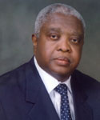

THE MAN BEHIND THE IBETO GROUP SUCCESS STORY

Dr. Cletus Madubugwu Ibeto is the Chairman/CEO of The Ibeto Group.
He is a renowned and acknowledged industrialist, who has advanced the cause of international goodwill and understanding through his extensive international business undertakings and network.
A man of good character, good business and community reputation, he is focussed and dedicated to pursuit of excellence.
Dr. Cletus Ibeto holds a B.Sc. (Hon.) Degree in Accountancy from the University of Nigeria, Nsukka (UNN) and was also subsequently honoured with a Doctor of Business Administration (DBA) (Honoris Causa) by the same University, his Alma Mata.
In recognition of his outstanding contributions to the socio-economic development of the country and service to humanity, he was also honoured at various times by the Federal Government of Nigeria (FGN) with Office of the Order of the Niger (OON) and Commander of the Order of the Niger (CON).
He is a member of Institute of Directors Nigeria and also sits on the Board of several other reputable corporate organizations in Nigeria and beyond.
He is currently the Chairman, Governing Council, Nwafor Orizu College of Education, Nsugbe, Anambra State, South East of Nigeria.
DIRECTORS AND MANAGEMENT TEAM
Chief Kofi Obijiofor
Director

Ajie Kofi Obijiofor holds degree in Accountancy from the University of Nigeria, Enugu Campus.
He had stint of military service with the Biafran Army during the Nigerian Civil war rising to the rank of Captain. When the civil war ended in 1970, he proceeded to Government College Afikpo where he passed his Higher School Certificate (HSC), in 1972 and went ahead to pursue a degree in Accountancy
After his National Youth Service in Kaduna State in 1977, Ajie Kofi Obijiofor incorporated and nurtured a construction company, OMEGA ENGINEERING SERVICES LTD which is today a very successful and leading engineering services provider in Nigeria. He also has substantial interest in other top rate companies like Kenoch Ventures, Danstacher turnkey Contractors Ltd and Universal Estate Developers Limited.
He is a holder of the traditional title of Ajie Nanka conferred on him by his town for his numerous services to humanity.
Ajie Obijiofor brings a wealth of experience in diversified fields like engineering, project management, real estate and accountancy.
Sir V. O. Agbasimalo
Director

Victor Okey Agbasimalo is the director, ‘New Projects’ Development of Ibeto Group. He holds a diploma in accountancy from Institute of Management and Technology Enugu (1974), Bachelors degree in Communications from University of Washington, USA 1978 and a Masters degree in Business Administration from Univeristy of Puget Sound Washington USA 1981.
He started his career in sales/distribution of ANNAMCO Mercedes trucks and Buses throughout Nigeria and later joined Pokobros Group as Group Marketing Manager. He resigned in 1990 to become a “New Projects” Advisory Consultant. He developed new business concepts for various organisations such as A-Z Petroleum Products Ltd, Dozzy Group of Companies, Golden Oil Industries Ltd., etc.
In 1996, he joined the Ibeto Group as “New Projects” Development Director, with the company taking giant steps in areas like Petroleum Lubricants, Down Stream Petroleum Retail and Bulk Storage, Cement Manufacturing, Shipping Services, etc.
Barr. Victor U. Udeh
Director

Barr. Victor Ude, the principal partner of the law firm, Udeh & Associates is an alumnus of both the University of Ilorin and the University of Nigeria, Enugu Campus where he bagged his law degree.
Between 1991 and 1995 while working with University of Nigeria, Enugu Campus he sat on a number of committee and boards charged with various responsibilities for the proper running of the University campus.
He served as an associate counsel with Lorphil and Associates before taking his present position as Principal Partner of Udeh & Associates.
He has vast legal experience spanning company law and practice, alternative dispute resolution and civil litigation.
The firm has served as arbitration registrar and conciliation registrar to a couple of blue chip clients.
He brings his vast experience of commercial law to bear in his capacity as a director of the Ibeto Group.
Osita G. Anigbogu
Executive Director/COO
(Ibeto Petrochemical Industries Limited)

Osita Anigbogu holds the demanding position of Executive Director (Manufacturing). Highly resourceful, he has a B.Sc. (Hons) Degree of the University of Nigeria, Nsukka. Upon graduation, he worked as a surveyor for about 6 years in both the public and private sectors including the Ministry of Works, Lands & Housing at Enugu and Akure.
Two years after joining The Ibeto Group, he felt more challenged by the opportunities then opening up in the group's manufacturing programme of action, at that time in its early implementation stages. Since November 1987, Mr. Anigbogu has held senior positions in the manufacturing sector, is widely travelled and is a member of various local and international professional associations.
He combines his primary duties of piloting the group's manufacturing operations at HQ Nnewi plants (comprising automotive lead acid batteries, lead recycling, brake pads, lube oils and auto components production etc) with responsibilities for Info Technology, Communications, Power & Water supply and the associated infrastructure and equipment. Mr. Anigbogu is a hands-on manager of men and materials who believes in leadership by example.
Eze R. Echesi
Group Executive Director
(Operations & Investments)

Eze holds a Bachelor's Degree (B.Sc) in Economics from the University of Ife (now Obafemi Awolowo University), Advanced Professional Diploma (Dip. M) from the renowned Institute of the Chartered Institute of Marketing of the United Kingdom and, an MBA from the University of Lagos.
He is a member of various professional Associations including Chartered Institute of Stockbrokers and National Institute of Marketing of Nigeria and, a Director of many Companies including Access Bank (Gambia) Limited and, Access Bank (D. R. Congo) Limited.
Prior to his position as Group Executive Director (Operations & Investments), he was a two-term Honourable Commissioner for Finance and Budget in Anambra State and, during which time, he also served as the Chairman Forum of Commissioners of Finance of Nigeria.
He also had had extensive private sector working experiences in both banking and non-banking sectors and in which sectors he had held senior management positions. He was the Group Executive Director (Operations) and subsequently the Managing Director in a leading electronic broadcast media organization, Minaj Broadcast International and, also had held the position of General Manager/Divisional Head in more than one Bank.
Devender Yadav
Executive Director
(Cement & Technical)

Davender has over 25 years experience in Project Management, Construction Management, Quality Management, General Management, Power
Generation Projects, Cement Manufacturing, Logistics, Shipping of Cement, and Electricity Transmission and Distribution. Most of this time was in cement manufacturing.
He previously served as Chief Operating Officer, Ibeto Cement Company Ltd.
Earlier, he had worked for us as Senior General Manager from January 2003 to August 2006 when he left following the unjust closure of our plant by governmental fiat.
Until he returned to us, he worked for Ambuja Cements Limited, a leader in cement manufacturing and distribution in India.
Devender earned a Bachelor of Engineering (Electrical) from Panjab University in 1986.
Dr. Amamchukwu Ezeike
Managing Director/COO
(Energy Network IBG Limited)

In addition to serving on the Board of a member company of The Ibeto Group, Dr. Ezeike has been the Medical Director, FIRST MAF HOSPITAL, Nnewi since 1985.
He has been active in community service. He is also involved in the political development process of Nigeria and served as State Secretary of Peoples Democratic Party, Governorship Aspirant and member of several committees of that party.
He has served as a member of the Board of the Psychiatric Hospital, Yaba. Dr. Ezeike has practiced Obstetric and Gynecology in Harvey Street, London.
He is a 1978 graduate of the College of Medicine, University of Lagos, Nigeria.
Sir Augustine A. Nnabuchi
Executive Director/COO
(Odoh Holdings Limited)

Augustine Azuka Nnabuchi is a seasoned and well exprienced administrator.
He joined The Ibeto Group in September 1981 as Funds / Projects Co-ordinator and has risen to his present position by dint of hard work and total commitment to the goals of the organisation.
A former senior staff of the Anambra State Local Government Service, he has been able to effectively manage the properties and estates of The Ibeto Group.
Chinonyerem J. Ogbonna
Group General Manager
(Human Resources Management & Administration)

Mr. Chinonyerem Joe Ogbonna is an accomplished Human Resources and Administration practitioner with over 20 years hands-on experience. He started his career in administration with the University of Nigeria, Nsukka.
He joined The Ibeto Group in 1985 and has served in many senior management positions. He was appointed General Manager [Personnel & Corporate Affairs] in March 1996. Since then he has brought his resourceful character to bear on his functions and has been involved in a number of the Group's key projects relating to Restructuring, Strategic Planning, NIS-ISO 9001-2000 and SAP.
Mr. Ogbonna holds a Masters degree in Public Administration (MPA) from the Imo State University, Owerri. He has attended many management and executive development courses which has helped broaden his vision. He is a member of many local and international professional bodies.
Eze S. Eze
Group Financial Controller

Mr. Eze, an associate of the Institute of Chartered Accountants of Nigeria (ICAN) manages the finance function of the Group. A dynamic and highly experienced professional, who also holds an MBA in Banking and Finance from the Imo State University, Owerri.
Before joining the Group in 2001 had worked at different times and in various divisions of UAC of Nigeria Plc as Financial Accountant and Commercial Manager. He was in 1997 seconded to General Cotton Mill Ltd., Onitsha as Senior Accountant.
Mr. Eze has attended many local and international financial and management courses.
Edmund E. Ngini
General Manager
(Lagos Operations)
Edmund Ngini, a resourceful, intelligent, hardworking and thoroughbred professional, is a graduate of the Institute of Management & Technology, IMT Enugu with a Higher National Diploma in Accountancy (1982).
Before joining The Ibeto Group, he had worked at Unipetrol Nig. Plc now Oando Plc, International Merchant Bank among other places in various capacities.
Mr. Ngini, who has attended many courses in Management and Finance, is a Fellow of the Institute of Chartered Accountants of Nigeria.
Ben-Oscar Nwachukwu
Group Chief Internal Auditor

Ben-Oscar is an analytical and solution-driven professional, leveraging over 20 years' experience/achievement in directing and enhancing complex business activities across corporate governance, financial reporting, operations, project management, and business assurance and compliance management. A process-oriented individual with high decision-efficiency, strong team, coaching and inter-personal skills.
Ben-Oscar joined the Ibeto Group in 2014 as the Group Chief Internal Auditor after spending 11 years at the Dangote Group and rising to the position of Deputy General Manager. His academic and professional certifications include:
- MBA, Financial Management, Lagos State University
- HND Accountancy, Auchi Polytechnic, Auchi
- Advance Management Program Certificate, Lagos Business School, Pan-Atlantic University
- Fellow, Institute of Chartered Accountants of Nigeria
- Associate Member, Chartered Institute of Taxation of Nigeria
- Fellow, International Academy of Business and Financial Management
- Certified Risk Analyst, International Academy of Business and Fin. Management
- Professional Member, Institute of Operational Risk, UK.
Ben-Oscar has been privileged to benefit from a good number of professional and management training, participated in various high-level organizational transformation programs and restructuring working with very good number of global consultants.
He is married to Felicia Nwachukwu with six children
Igboazam Nwafor-Orizu
General Manager, Operations
(Ibeto Cement Co. Limited)

Igboazam graduated from Ebonyi State University with a degree in Economics. He is also versatile in computer applications especially database oriented research.
His role in operations of the Ibeto Cement Plant demands a team player who is able to work under pressure while remaining amiable. These are qualities he has in abundance.
A very persuasive young man he is an asset in difficult negotiations and make or break presentations.
Engr. C. K. Bopaiah
General Manager/Chief Operating Officer
(Union Autoparts Manufacturing Co. Limited)

Engr. C. K. Bopaiah is a Marine Engineer. Heads union Auto parts Mfg Co. Ltd as Chief Operating OfficerEngr.
He holds a master degree, MBA in (International Business) from the University of Wales, UK. He also holds a NEBOSH International General Certificate from UK.
He is an innovative and result oriented leader with extensive experience of 29 years, in high level operational initiatives, including infrastructure design, process re-engineering and turn around management. He is an outstanding project leader and a champion of smart manufacturing techniques.
Before joining Union Autoparts Mfg Co Ltd. In the year 2014, he had served reputed Battery manufacturing and ship building companies in India and other countries such as, viz: Exide Industries India Ltd, TEAM (Topaz Energy and Maritime ) Ltd. in the Middle East and Reem Batteries and Power Appliances Co, SAOG in middle east all in senior management positions.
He has also sailed on board ships and submarines as a Marine Engineer.
Theophilus Nzei
General Manager/Chief Operating Officer
(Ibeto Hotels Limited, Abuja)

Mr. Theophilus Nzei is an astute hotelier with 19 years hands-on knowledge in the hospitality industry. He is a graduate of Business administration and management from Ahmadu bello University Zaria. He also holds a Masters degree in strategic planning from the Federal University of Technology Owerri.
Theophilus has worked with many hotels both in Nigeria and abroad. He has a carer spanning 9 years with The Marriott group. Marriott hotel Doha in Qatar 7 years and later Marriott hotel Leicester UK. 2 years, A member institute of Hospitality and tourism management Scotland and the whales. He was a pioneer GM of Planet One Maryland Lagos.
Vincent Ejike
General Manager, Operations
(Union Autoparts Manufacturing Co. Limited)

Engr. Ejike holds a Bachelor of Engineering degree in Agricultural Engineering from the University of Nigeria, Nsukka. He joined the Group in 1989 and has held many management positions. He has proved to be a seasoned administrator and was nominated for the 1996 Distinguished Leadership Award and the 1997 International Man of The Year Award of the American Biographical Institute.
He currently heads our Union Recycling Plant and our Friction Parts factory. Engr. Vin Ejike who is widely travelled and is at home with international trade oversees our Export business. An emeritus President of the Nigerian Universities Engineering Students Association (NUESA), Engr. Ejike is a corporate member of the Nigerian Society of Engineers (NSE) and is a COREN registered engineer.
Kingsley Kalio
Manager, Human Resources Management & Administration
(Ibeto Cement Co. Limited)
Mr. Kingsley Kalio, a Fellow of the Institute of Corporate Administration holds a Masters Degree in Business Administration. A political scientist, he had worked with The Code of Conduct Bureau rising to the post of State Coordinator before joining the The Ibeto Group in search of a challenging corporate environment.
He oversees the Human Resource and Administration of Ibeto Cement Ltd., providing policy guideline on employee service motivation, maintaining good relations with trade unions and other bodies concerned with employment and working conditions.
His duties see him striving to ensure a harmonious work environment that guarantees employee job satisfaction and maximizes productivity
Johnny Ekewuba
Head, Marketing & Commercial Operations
(Union Autoparts Manufacturing Co. Limited)

Mr. Johnny E. U. Ekewuba holds a Second Class Honours Degree from the University of Calabar, and a Certificate of the Institute of Marketing Berkshire, England. He has over 25 years of post-graduation experience in Marketing.
Mr. Ekewuba commenced his marketing career with The Guardian Newspapers before moving to other establishments. Joined The Ibeto Group in 1996.
Johnny holds the responsibility for the marketing activities and oversees the development and delivery of a fully integrated marketing and marketing communications strategies for the business.
He is imaginative, persistent, persuasive, active and productive. Possesses the ability to deliver on his commitment, constantly bringing his vast experience to driving growth within the Group.
Mohan Lal Mittal
Manager (Electrical Engineering)
Mohan has over 23 years of professional experience in the erection, testing, commissioning, operation and maintenance of electrical equipments in Cement Manufacturing and Power Plants. His experience was garnered working in companies in India, Bahrain and Nigeria.
He was part of the erection team for the Ibeto Cement Company Limited from 2005 to 2006. He returned to the company in November 2009.
Mohan earned a Diploma in Electrical Engineering from the Board of Technical Education, Jodhpur, Rajasthan, India in 1987.
Kushubar U. Aghav
Manager (Mechanical Engineering)

Kushubar U. Aghav has over a decade of experience in erection, commisioning and maintenaince of mechanical equipment in the cement industry. A pioneer staff of Ibeto Cement Ltd, Mr. Aghav was involved in the erection and commissioning of the 5000 TPD Cement Terminal Mechanical Equipment among other equipment in the plant.
Before joining the Ibeto Cement Plant he had worked with JUD Cement Limited, Meghalaya and Gamma Civic Ltd., Mauritius key players in the cement production industry.
Kushubar brings a wealth of experience to bear on his responsibility of ensuring smooth running of mechanical equipment and guaranteeing minimum downtime.
Augustina I. Manafa
Manager/Chief Operating Officer
(Kings Palace Hotels, Nnewi)

Mrs. Augustina Manafa (Nee Nnacho) is a graduate of Guidance and Counselling of the University of Nigeria, Nsukka. As a professional teacher, she worked with the Anambra State Schools Service Commission and taught in many schools in the State. She voluntarily retired from the State Service as pioneer Counsellor of Nnewi North Local Government Education Authority which position she held meritoriously for 5 years.
An astute and resourceful fellow, she joined the Ibeto Group in 2004 and has since held the demanding position of Manager in our Kings Palace Hotels Ltd. She is happily married.
THE STAFF
Consistent with our corporate philosophy and culture of excellence, THE IBETO GROUP boasts of a well-trained, versatile and highly motivated work force. The team spirit amongst our staff is the major asset that has made it possible for us to remain ahead of our competitors. Always conscious of the fact that nothing can be achieved without seasoned, productive and highly skilled personnel, staff development and training has remained our deliberate policy.
Our business contributions to the enhancement of our society bear testimony to the consistency and sincerity in our determination to deliver our promise.